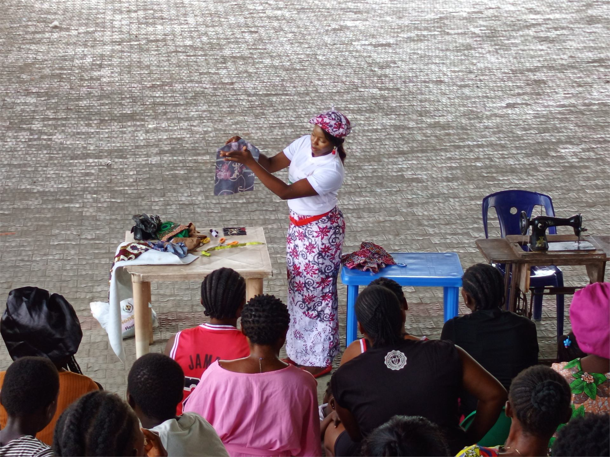
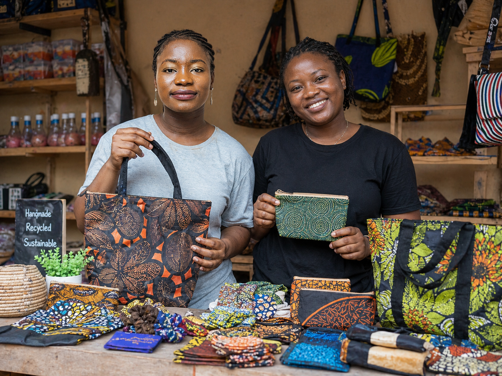
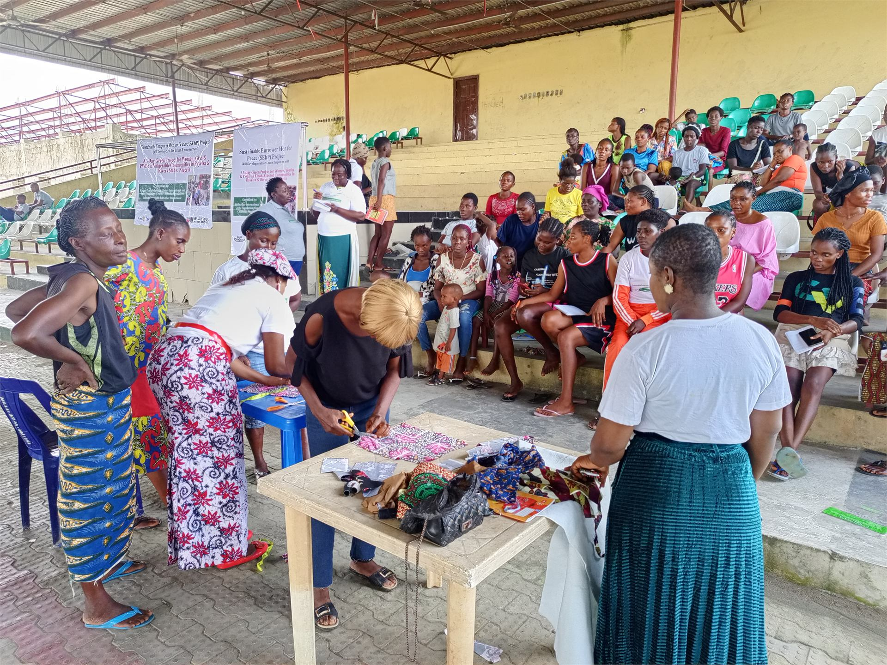
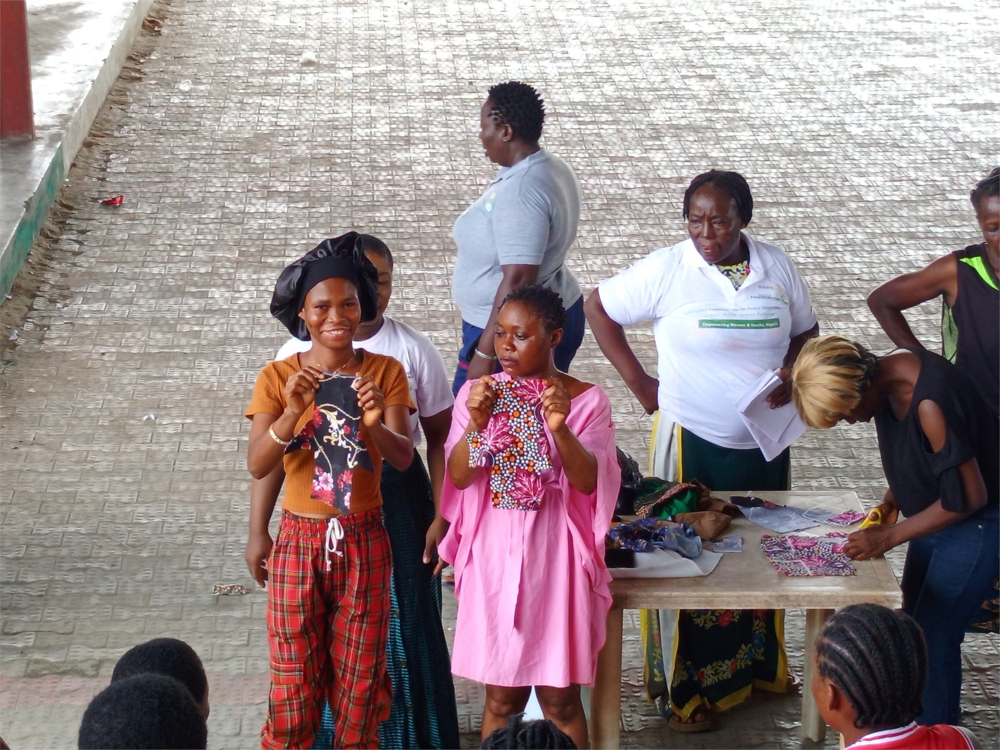
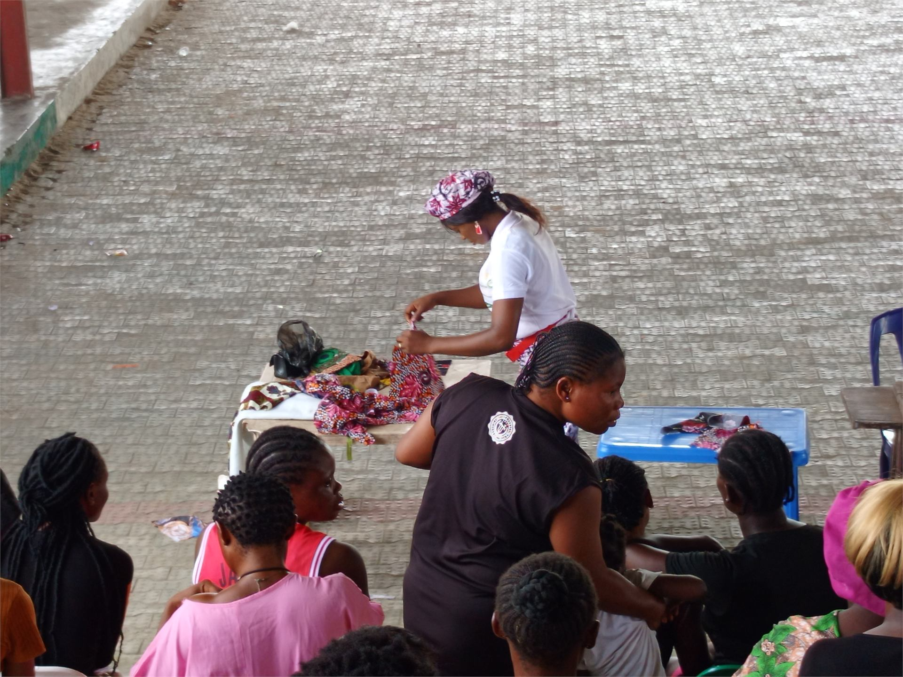
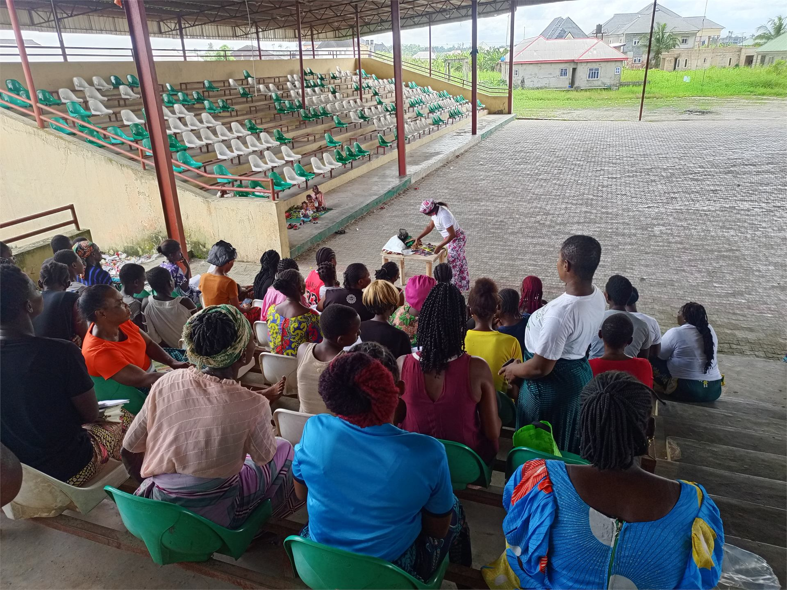
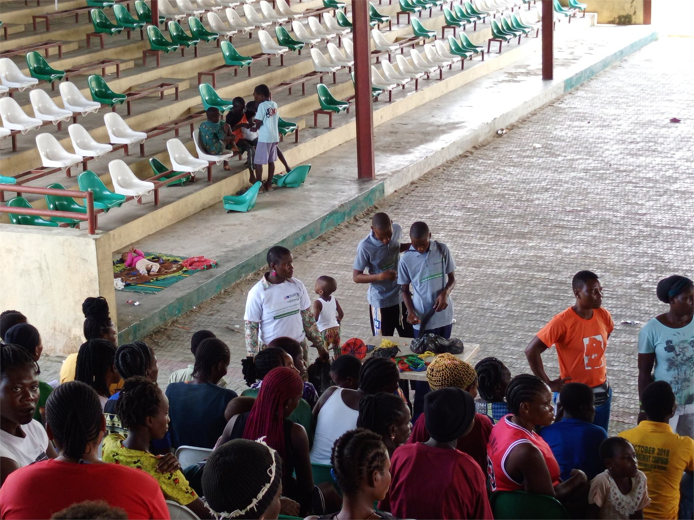

1
1
Women-Led Skills Development and Livelihood Support
We equip women and girls with hands-on green vocational skills that help them become economically active, self-reliant, and confident in their ability to create value.

A women-centered green empowerment project focused on practical skills, sustainable livelihoods, and inclusive community resilience.
The Sustainable Empower Her Program, SEhP, is a JullyConsult initiative designed to equip women and girls with practical green skills, confidence, and enterprise pathways. Through circular economy training, textile reuse, and reusable product development, the program helps women transform waste into livelihood opportunities while contributing to climate action and community resilience.
The Sustainable Empower Her Program was created to support women and girls who face economic hardship, limited access to skills, and exclusion from sustainable livelihood opportunities. SEhP provides practical, hands-on training that helps participants learn how to turn textile waste and other reusable materials into products with market value.
The program goes beyond skills acquisition. It strengthens women's confidence, supports enterprise thinking, promotes environmental responsibility, and creates pathways for women to participate meaningfully in local green value chains.
Through SEhP, women are not only trained as beneficiaries; they are positioned as creators, entrepreneurs, climate actors, and leaders in their communities.

SEhP supports women and girls with circular economy skills that can translate into income, enterprise growth, and stronger participation in local green value chains.
1
We equip women and girls with hands-on green vocational skills that help them become economically active, self-reliant, and confident in their ability to create value.

2Participants learn how to transform textile waste and reusable materials into practical products such as reusable pads, bags, fashion accessories, home items, and other eco-friendly goods.

3SEhP supports women to move from training to income generation through enterprise development, pricing, customer engagement, savings culture, and local market access.

Across many communities, women and girls are deeply affected by poverty, unemployment, climate stress, and limited access to economic opportunities. At the same time, textile and plastic waste continue to pollute communities, block waterways, and worsen environmental challenges such as flooding.
SEhP responds to these issues by connecting women's empowerment with climate action. The program helps women gain practical skills, create products, earn income, and contribute to environmental protection through circular production.
By turning waste into useful products, women become part of the solution. They reduce pollution, support household income, build dignity, and strengthen resilience in their families and communities.
SEhP is helping women and girls gain practical tools to build sustainable livelihoods while contributing to cleaner, more resilient communities.
We train women and girls to create useful products from textile waste, plastic materials, and other reusable resources.
Participants learn to produce reusable pads, eco-friendly bags, berets, accessories, household items, and other sustainable products.
We introduce participants to basic business skills, including pricing, savings, customer care, branding, and market access.
We teach participants how reuse, recycling, and responsible production can protect the environment and create income opportunities.
Women and girls are encouraged to see themselves as innovators, entrepreneurs, and contributors to community development.
We support participants with exposure to local markets, microfinance opportunities, cooperative structures, and community-based enterprise models.

Through SEhP, women and girls are discovering that skills can become income, waste can become value, and community challenges can become opportunities for innovation. Many participants gain more than technical knowledge; they gain confidence, dignity, and a stronger voice in their homes and communities.
The program inspires women to become producers instead of only consumers, entrepreneurs instead of dependents, and climate leaders instead of silent victims of environmental challenges.
"Before this training, I did not know I could turn discarded fabric into useful products. Now I have a skill I can use to support myself and my family."
SEhP participant
The Sustainable Empower Her Program was implemented with support from Rotary International, strengthening JullyConsult's mission to empower women and girls through sustainable livelihoods, climate action, and inclusive community resilience.
This partnership supported practical skills development, women-led enterprise pathways, and circular economy solutions that help vulnerable women create income while protecting the environment.
 SDG 1: No Poverty
SDG 1: No PovertySupporting women and girls with skills that can lead to income generation.
 SDG 5: Gender Equality
SDG 5: Gender EqualityPrioritizing women-centered empowerment and leadership.
 SDG 8: Decent Work and Economic Growth
SDG 8: Decent Work and Economic GrowthHelping participants develop enterprise skills and sustainable livelihood pathways.
 SDG 10: Reduced Inequalities
SDG 10: Reduced InequalitiesSupporting women and girls who face economic and social exclusion.
 SDG 12: Responsible Consumption and Production
SDG 12: Responsible Consumption and ProductionPromoting textile reuse, reusable products, and circular production.
 SDG 13: Climate Action
SDG 13: Climate ActionReducing waste pollution and strengthening community-level climate resilience.
Training moments, product-making activities, finished reusable products, and partner-supported project visuals.






JullyConsult is committed to expanding SEhP to reach more women and girls in underserved communities. With the right support, we can provide more training, tools, mentorship, market access, and enterprise support for women-led green livelihoods.
Use this form to express interest in donating, partnering, sponsoring a women-led training cohort, volunteering, or supporting enterprise kits.